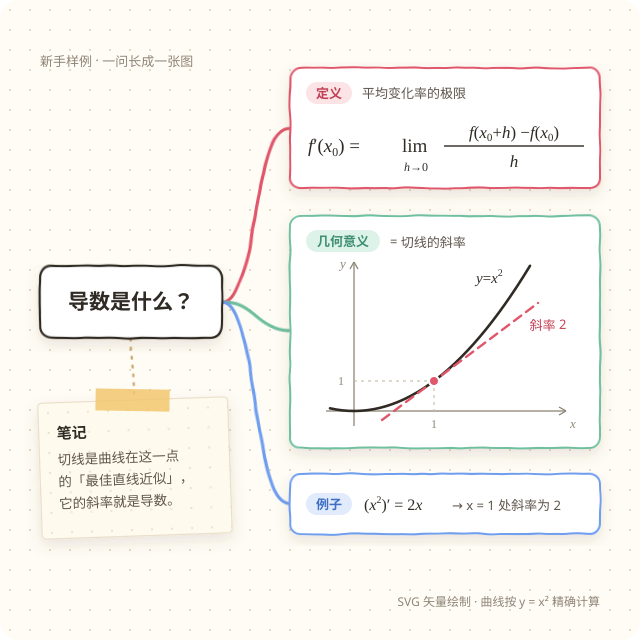

普通聊天越聊越长，回头找"刚才那个公式"很难。MargicMind 把每一问都放在画布上。
核心问题排成一条主线（横版或竖版），对某一问的例子、细节、疑问从两侧长成树。拖动卡片会像 XMind 一样自动吸附、重新挂接。
兼容 $…$、$$…$$、\(…\)、\[…\]、\begin{align} 等各种写法，列表里缩进的公式也能正确渲染，不用再提醒 AI"重新排版"。
内置免费的对话、推理、看图、文字识别、图片生成模型，不用申请任何密钥。也可以接入自己的 API 或本机的命令行工具。
提问框里点小麦克风，说完自动转成文字；选图片模型描述画面，生成的图直接贴在卡片里，并保存在本地。
自己的心得写在点阵纸笔记上，用七款和纸胶带"贴"在画布里；配色方案、手绘笔触、马卡龙 / 浓色分支一键切换。
整张画板导出为高清 PNG、PDF、Markdown（XMind 可导入），或打包成画板文件，换电脑时连图片一起原样搬走。

提问框下面的「自带 / 手动 / 本机」切换模型来源。自带模型按用途排好：
这张图是一张 SVG 矢量图：不是图片模型"画"出来的，而是由对话模型直接写成 SVG 代码，抛物线和切线都按公式精确计算，放大也不会糊。自带的图片模型擅长插画和氛围图，但画不准公式和函数曲线；需要准确的示意图时，对对话模型说一句"用 SVG 画出来"就行。
有自己的 API？在「手动」里填上地址和密钥即可接入（支持 Anthropic Claude 和 OpenAI 兼容接口），模型列表会自动获取；密钥只存在本机后台，界面里看不到。
画板、附件、设置都保存在本机，没有账号，不上传云端。
本地服务只在 127.0.0.1 监听，每次启动生成随机令牌，其他程序调不动。
你填的 API 密钥只在后台服务里使用，界面永远拿不到。
不再被任何卡片使用的附件会自动清理，录音只用来转文字、不保存。
MargicMind 现在只在朋友之间小范围试用，还没有公开下载。想试试的话，可以通过 GitHub 联系作者获取安装包。
系统要求：Windows 10 / 11（64 位）· 安装包约 150 MB · 首次运行若提示"已保护你的电脑"，点"更多信息 → 仍要运行"